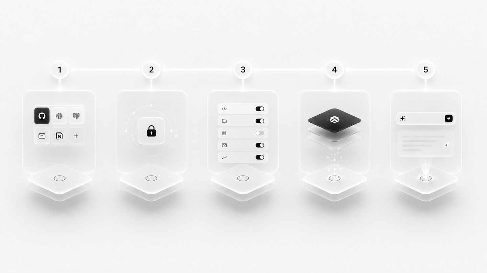
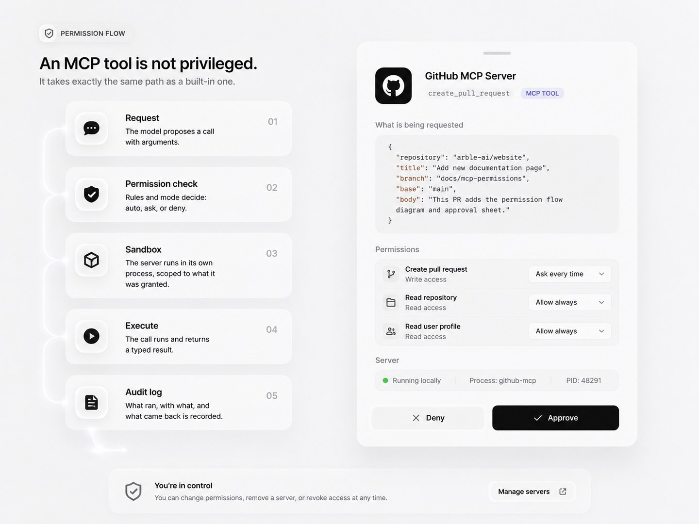
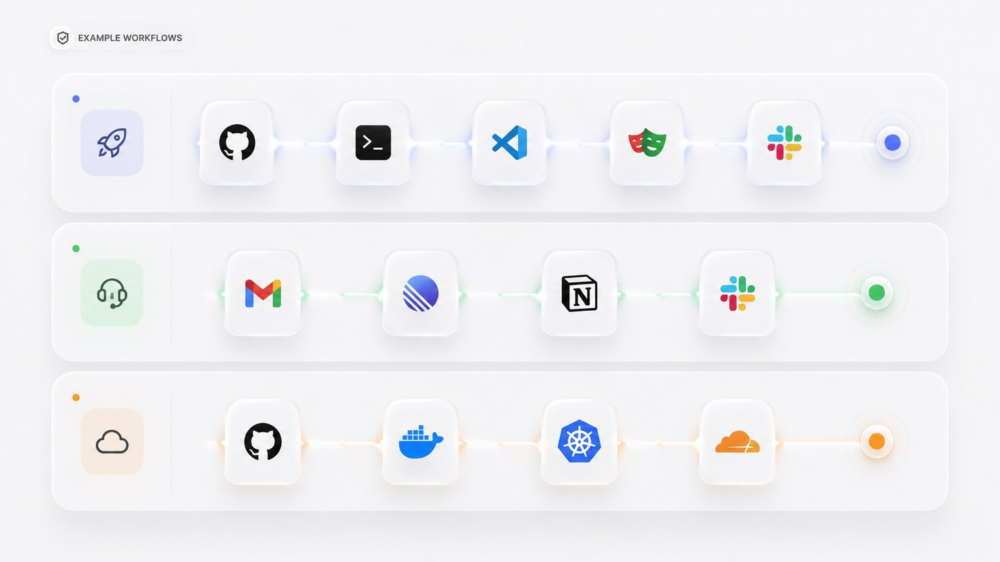
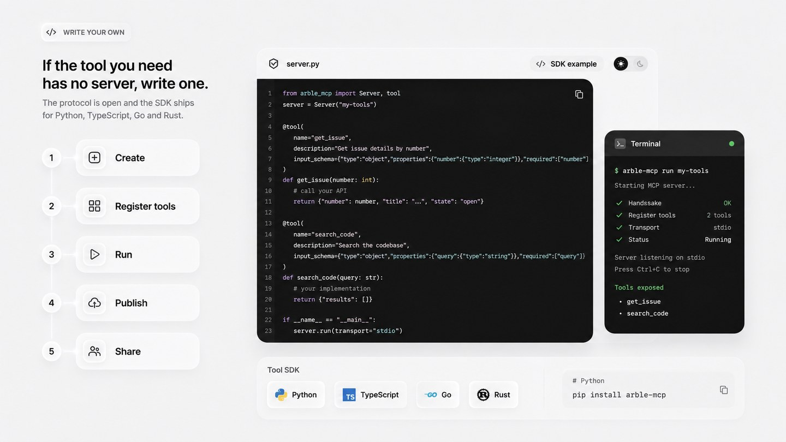

MCP Servers
The Model Context Protocol gives any compatible tool a standard way to offer capabilities to an agent. Arble speaks it natively, so a server you install becomes a set of typed tools sitting alongside the built-in ones — same registry, same permission gate, same audit log.
Before you start. Package names, endpoints and the figures in the health table below are placeholders that show the shape of each thing. Replace them with real values before publishing.
How Arble uses MCP
Most clients treat MCP as the way they get tools. Arble treats it as one of three sources, all of which land in the same registry and are chosen between by the same agent.
![Arble agent at the top branching into three columns — Built-in tools listing file system, terminal, browser and memory; MCP servers listing GitHub, Slack, Gmail and Postgres; and Local devices listing macOS, Windows and Linux APIs and a mobile bridge. All three feed a unified tool registry captioned every tool, one registry, same permissions, which in turn feeds five example calls: read file from built-in, open PR from an MCP server, take screenshot from a local device, query database and notify team from MCP servers.](../../../assets/img/docs/mcp-architecture.jpg)
Because they share a registry, the agent does not need to know which source a tool came from. A skill can read a file with a built-in tool, open a pull request through an MCP server, and take a screenshot on a paired desktop, in one run.
Built-in vs MCP
The split is roughly: things tied to your device are built in, and things tied to an external account arrive through a server.
Built into Arble
- Memory
- Browser
- Terminal
- File system
- Desktop control
- Mobile bridge
Added through MCP
- GitHub
- Slack
- Jira
- Notion
- Figma
- AWS
Why not a plain client
MCP is a protocol for exposing tools. It says nothing about memory, device access or how approval works — those are the client's job, and most clients leave them out.
| Capability | MCP alone | Arble |
|---|---|---|
| Connect many servers at once | ✓ | ✓ |
| Persistent local memory | — | ✓ |
| Native desktop automation | — | ✓ |
| Mobile companion device | — | ✓ |
| Permission gate on every call | Varies | ✓ |
| Multi-agent orchestration | Varies | ✓ |
| Built-in tools alongside MCP | — | ✓ |
Featured servers
A handful worth starting with. The full list is below.
- Read repos
- Create PRs
- Review code
- Read channels
- Post messages
- Threads
- Read frames
- Inspect layers
- Export assets
- Read mail
- Draft
- Search
- SQL
- Schema
- Transactions
Directory
Every server Arble is known to work with. Each installs separately and can be revoked on its own.
Development
- GitHub
- GitLab
- VS Code
- Docker
- Kubernetes
- Terminal
Productivity
- Notion
- Google Drive
- Slack
- Linear
- Jira
- Confluence
Communication
- Gmail
- Outlook
- Discord
- Telegram
- Teams
Design
- Figma
- Canva
- Framer
- Photoshop
Cloud
- AWS
- Azure
- GCP
- Cloudflare
- Vercel
- Railway
Data
- Postgres
- MySQL
- MongoDB
- Redis
- Supabase
- Pinecone
AI
- OpenAI
- Anthropic
- Gemini
- OpenRouter
- Ollama
- LM Studio
Browser
- Chrome
- Firefox
- Playwright
- Puppeteer
Installing a server
Five steps, the same for every server.
- 1InstallAdd the server from the directory, or point Arble at an endpoint.
- 2AuthenticateSign in to the underlying service. Tokens go to the device keystore.
- 3Review permissionsSee every tool the server exposes and decide which run without asking.
- 4ReadyThe server's tools appear in the registry next to the built-in ones.
- 5Use in agentAsk for the work. The agent picks the tool.

Setup by client
Every client below connects to the same server. Pick the one you use.
General. Any MCP-capable client needs a command, its arguments, and an optional environment:
Command: npx
Arguments: -y mcp-remote https://mcp.example.com/mcp
Environment: noneClaude, Cursor, Windsurf. Add from settings, or paste into the config file:
{
"mcpServers": {
"arble": {
"command": "npx",
"args": ["-y", "mcp-remote", "https://mcp.example.com/mcp"]
}
}
}Claude Code. Register once, then run /mcp in a session to authenticate.
claude mcp add --transport http arble https://mcp.example.com/mcpCodex. The IDE extension and the CLI share one configuration.
codex mcp add arble --url https://mcp.example.com/mcpVisual Studio Code. Command palette → MCP: Add Server → Command (stdio), then:
npx -y mcp-remote https://mcp.example.com/mcpZed. Add a context server in settings:
{
"context_servers": {
"arble": {
"source": "custom",
"command": "npx",
"args": ["-y", "mcp-remote", "https://mcp.example.com/mcp"],
"env": {}
}
}
}Remote vs local
Most servers can run either way. The choice is about privacy and availability, not capability.
Remote server
- Runs in the cloud
- Reached over HTTPS
- Shared across your devices
- Online whenever the service is
Local server
- Runs on your own machine
- Never leaves the device
- Private by construction
- Works with no connection
Choose remote when the service is a cloud product anyway and you want it on every device. Choose local when the data should not leave the machine, or when you need it to work with no connection.
Permission flow
An MCP tool is not privileged. It takes exactly the same path as a built-in one.
- 1RequestThe model proposes a call with arguments.
- 2Permission checkRules and mode decide: auto, ask, or deny.
- 3SandboxThe server runs in its own process, scoped to what it was granted.
- 4ExecuteThe call runs and returns a typed result.
- 5Audit logWhat ran, with what, and what came back is recorded.

Security
Permission sandbox
Each server is a separate process with only the access it was granted.
Local execution
A local server is a process you own. Nothing is relayed through Arble.
Encrypted transport
Remote servers are reached over TLS. Local ones never touch the network.
Scoped permissions
Rules are per tool and per server, not one switch for everything.
Audit logging
Every call is recorded with its arguments, result and approval.
Server revocation
Remove a server and its tools leave the registry immediately.
Secret management
Tokens live in the device keystore, never in config files or logs.
Server health
Connected servers, what they cost you in latency, and what they are allowed to do.
| Server | Status | Latency | Version | Permissions |
|---|---|---|---|---|
| GitHub | Connected | 48 ms | v1.4.2 | 6 tools |
| Slack | Connected | 72 ms | v1.1.0 | 4 tools |
| Postgres | Connected | 11 ms | v2.0.1 | 3 tools |
| Notion | Disabled | — | v1.0.7 | 0 tools |
| AWS | Healthy | 130 ms | v0.9.4 | 9 tools |
Example values. Wire this table to live server state before publishing.
Example workflows
Servers compose. One instruction can cross as many as the task needs.
Ship a feature
- GitHub
- Terminal
- VS Code
- Playwright
- Slack
Handle support
- Gmail
- Linear
- Notion
- Slack
Deploy
- GitHub
- Docker
- Kubernetes
- Cloudflare

Write your own
If the tool you need has no server, write one. The protocol is open and the SDK ships for Python, TypeScript, Go and Rust.
- 1Create
- 2Register tools
- 3Run
- 4Publish
- 5Share

Common use cases
Triage a repository
Ask for the open pull requests touching a directory you own, and have the agent summarise what each changes before you open any of them.
Draft from a thread
Point the agent at a mail thread and a document, and have it draft the reply with the document's numbers already in it.
Reproduce a bug
Give it a failing test name. It reads the file, runs the suite in a container, and reports which assertion broke.
Close the loop on a design
Read a Figma frame, generate the component, and open the pull request with the frame linked in the description.
FAQ
What is a Model Context Protocol server?
A small program that exposes a set of typed tools over a standard protocol. Arble connects to it and those tools become available to the agent, alongside the built-in ones.
Where does a server run?
Either on your own machine as a local process, or as a remote endpoint you point Arble at. A local server never sends anything over the network; a remote one is reached over TLS.
Does installing a server give it access to my data?
No. A server exposes tools; it does not receive your session, your memory or your keys. Every call it offers still passes the permission gate before it runs.
Can a server act without asking me?
Only if you grant it that. Read-only calls can be auto-approved; anything that writes, sends or spends stops at the gate by default, exactly like a built-in tool.
What happens when a server is unreachable?
Its tools are reported as unavailable and the agent says so, rather than silently substituting a different route or retrying an operation that may already have run.
Can I write my own?
Yes. The protocol is open and the SDK ships for several languages. A server that exposes one useful tool is a reasonable afternoon's work.